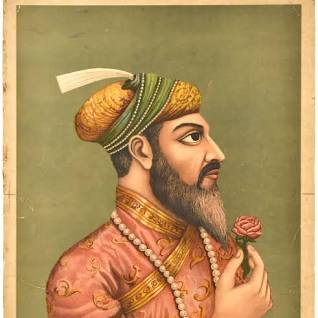

ETYMOLOGY

Abdul Hamid Lahori, in his book from 1636 Padshahnama, refers to the Taj Mahal as rauza-i munawwara (Perso-Arabic: روضه منواره, rawdah-i munawwarah), meaning the illumined or illustrious tomb.[9] The current name for the Taj Mahal is of Urdu origin, and believed to be derived from Arabic and Persian, with the words tāj mahall meaning "crown" (tāj) "palace" (mahall).[10][11][4] The name "Taj" came from the corruption of the second syllable of "Mumtaz".[12][13]